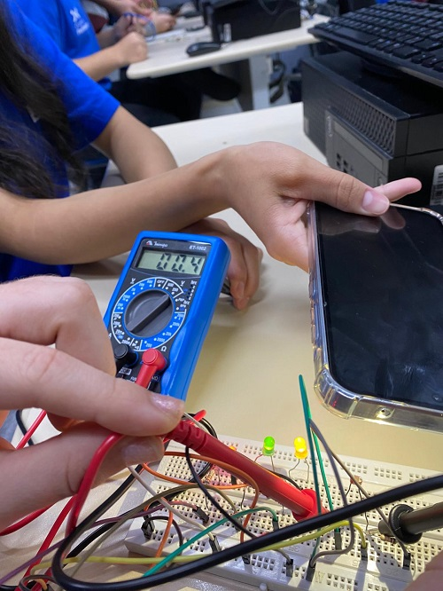
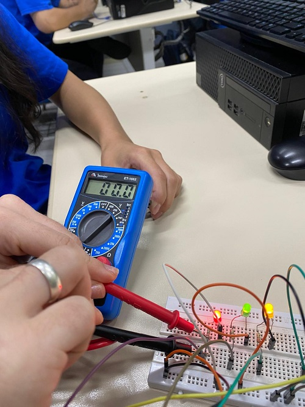
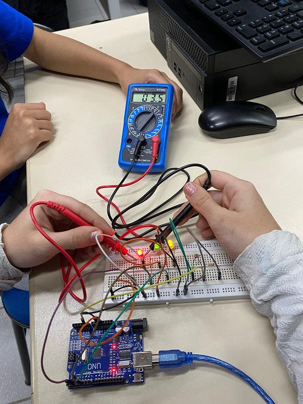

Quando a luz não está sobre o LDR sua resistência fica maior
Ao colocar luz sua resistência cai, fazendo com que a corrente passe
Resistor de 220Ohms sem resistência
Com o LDR foi possível permitir que os leds ligassem, funcionando como um sistema de iluminação